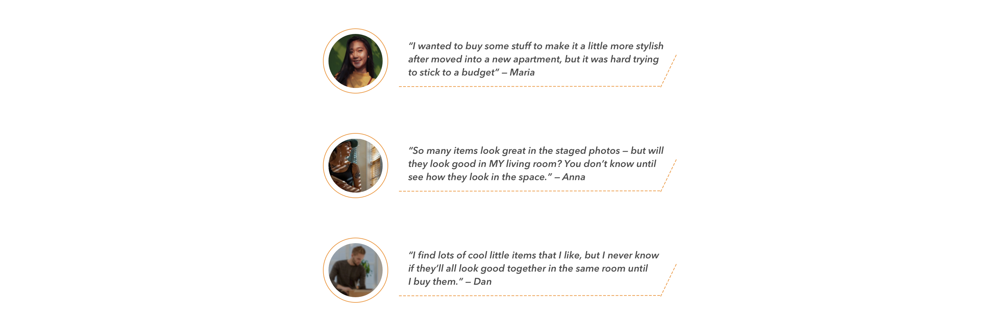
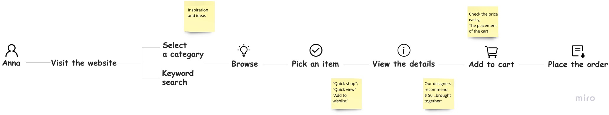
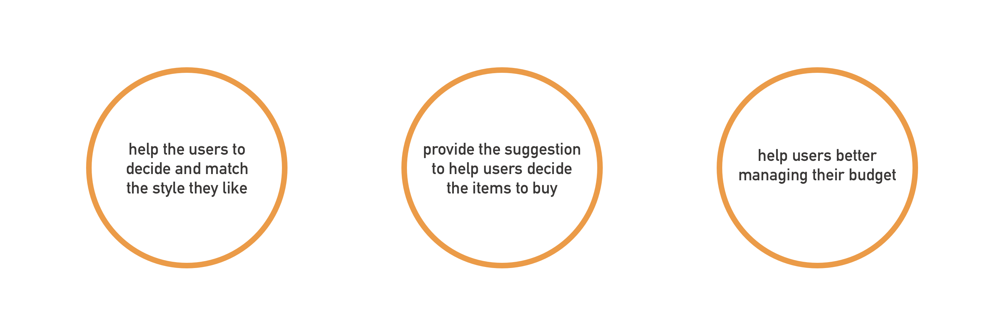
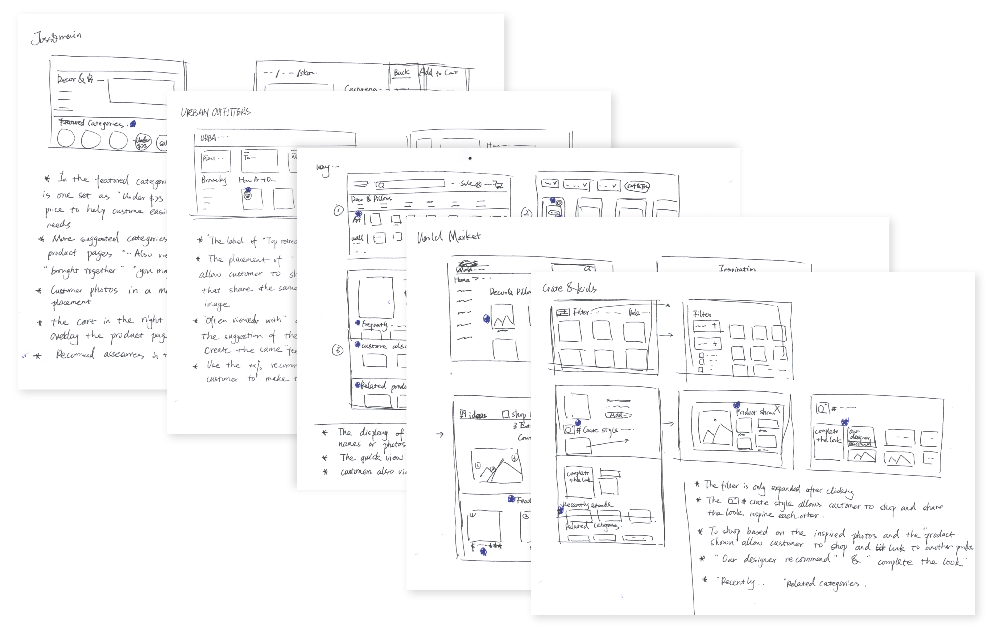
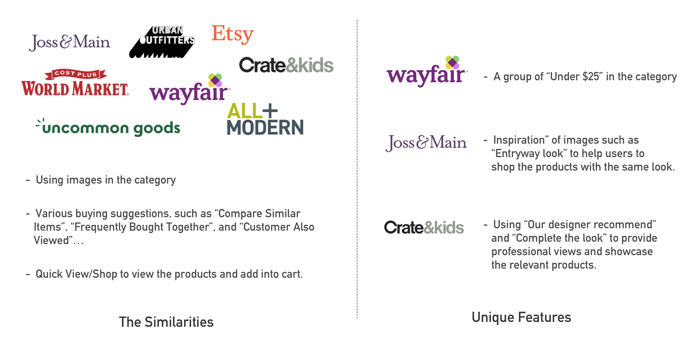
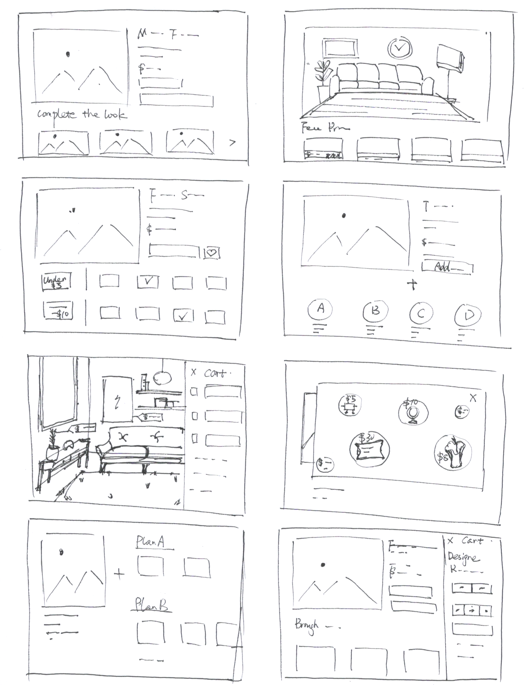
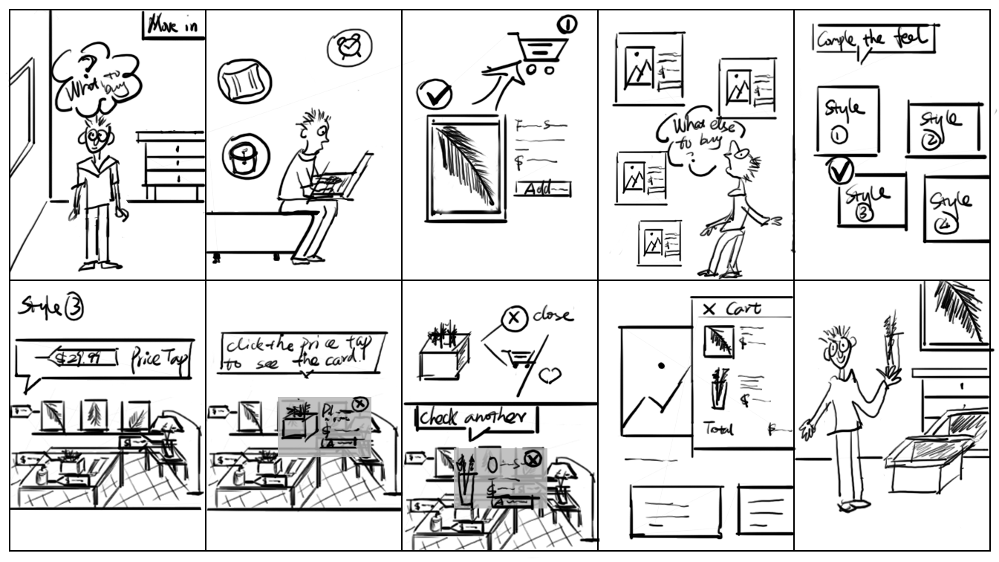
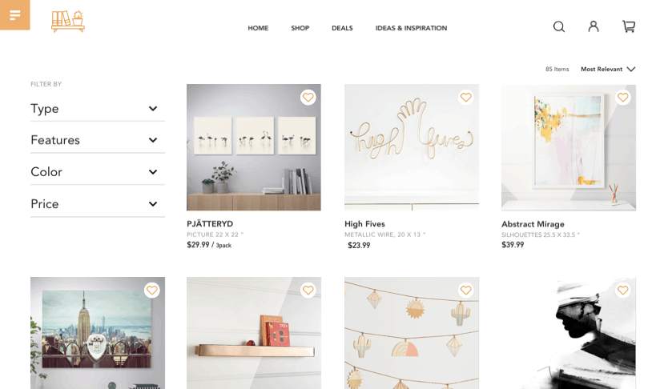
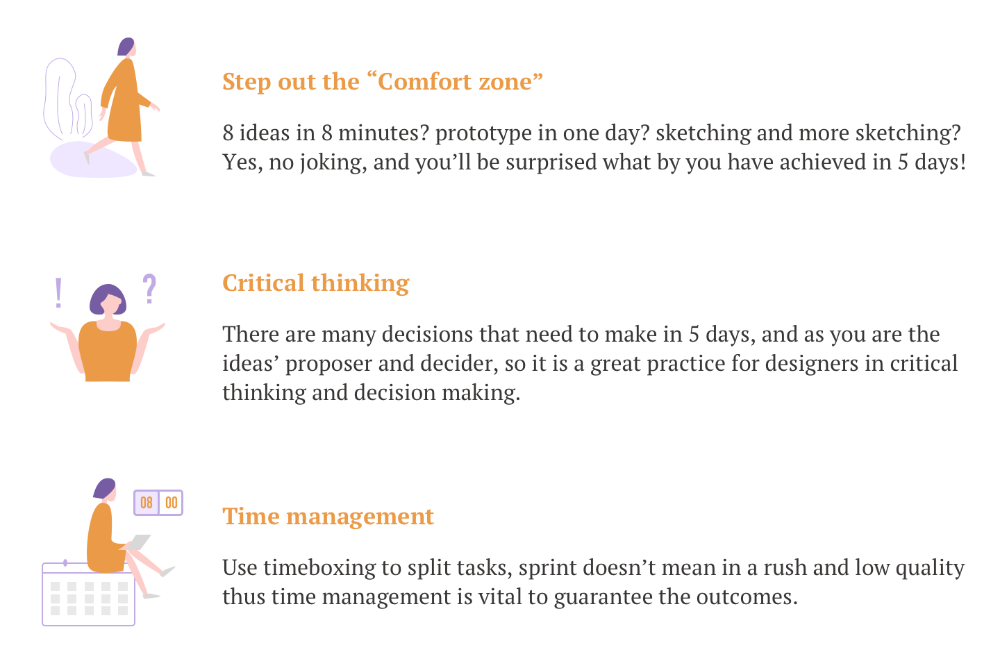

User Map from visiting the website to placing the order
Junqian liang
Product designer
About this Project
The “Design Sprint” is a five-day process for answering critical business questions through design, prototyping, and testing ideas with customers. It was born out of a need for a process that would allow companies to quickly create testable prototypes so that they could determine if they wanted to go through with the designing and building of a particular product.
This case study is based on the Bitesize UX challenge called House2Home while applying the design sprint methodology.
Different from Google Venture’s traditional design sprint working with a team, I will be the sole designer, and takes 3–5 hours per day to walk through the step-by-step process.
Challenge
House2Home is an e-commerce website that sells home decor items & accessories. When customers move into a new home or apartment, they want to buy multiple items to personalize their new place. However, they don’t feel confident doing it on their own and they are not sure whether the item matches each other.
Constraints
The solution should be designed as a website, starting with designs for larger screens (desktop&laptop).
Focus on helping users that want a “decor kit” of multiple products to decorate a new apartment.
Most House2Home products are decorative products and accessories that cost around $10 — $50, they don’t sell furniture, appliances, or other large pieces.
My Role
Solo UX/UI designer
Day 1 Understand
The goal of the first day is to specify what exactly the challenge is and pick the manageable piece of the problem that I can solve in one week.
Interview
I started with reviewing the existing research on the problem and here are some of the highlights from the research:

In order to further synthesize the research, I summarized the key important things that users mention frequently:
Knows the “feel” and “like” but not sure what to buy;
Would like to know whether the stuff will look good together while putting together;
Have a quick “facelift” to the apartment without costing much time in searching for lots of individual items.
The budget concerns;
Map
I drew the map to better visualize the flow of the user in shopping the home accessories. I split it into several important steps:

HMW Questions
With the key insights mentioned above and taking the user journey into consideration, I narrowed down the notes to the 3 most important HMW (How Might We) questions that I tried to answer in my sprint.

HMW Questions
Day 2 Sketch
The second day of a design sprint is to break down sketching into a step by step activity. Firstly I spent some time looking at the competitor’s products and related products for inspiration and then with all the foundation on the first day, I used the method call crazy 8 to sketch my solutions.

My sketching in the "Lightning Demos"
Lightning Demos
The goal of this exercise is to generate a pool of ideas that I could later use to produce the solutions. I spent half a day looking at competitors that selling similar products or provide design services for inspiration, which included: Urban Outfitters, Joss & Main, World Market, All Modern, Uncommon Good, Crate & Kids, Wayfair, and Etsy. Here are my sketching notes:
After study various competitors, I found they have something in common as well as unique features:

My findings after the "Lightning Demos"
Crazy 8s Sketch
The process of “Lighting Demo” gave me a lot of inspiration and the next step would be “Crazy 8s”. Crazy 8’s is a fast sketching exercise that requires the designer to sketch eight distinct ideas in eight minutes. Generating a wide variety of solutions to the challenge is the key here.
I referred back to my map I made on Day 1 and decided the most critical step (screen) for my users. With my notes in “Lighting Demo”, I started to use Crazy 8 to sketch solutions.

Crazy 8 - 8 ideas in 8 minutes
My thoughts that generated in Crazy 8:
In the research stage, most of the users said they know what the “feel” and “look” they like, but not sure what to buy and how the items match with each other, so is that possible to use the “style image” to help customer to make a decision?
Is it possible to provide the buying options such as a decor kit for Plan A, Plan B?
How about setting the groups of “Under $10”, “$10 — $30” then customers can easily pick the items from the price groups?
How about attaching the price tap of the products and displaying them in the image with the same look/feel?
Day 3 Design
After comparing each idea, I was about to decide which idea worked for my case. As I am the sole designer in this “Design Sprint”, so I am not only the proposer but also the decider. In order to ensure the decision is not on a whim, here is my thinking process and the decision that I go with:
In the feature of “Complete the look”, I will use the images to display the items in a true life scenario.
According to the research, the user mentioned when they decorate their room, they would like to listen to the ideas from the professionals. Therefore, I used the “Complete the Look” and the “Our designers pick” to help the customers to find the items match with each other.
The purchasable items will be attached with a price tap. Once the customer is interested in that they could click it and see the main product information.
Customers can add it to the wishlist or add to the cart to create their personalized “decor kit” and check out.
Here is the storyboard I drew to guide my prototype:

Storyboard
Day 4 Prototype
Day 4 is the prototyping day and all my ideas and decisions come together into a realistic prototype that I could test with users.
Different from the traditional “design sprint” to divide components of the prototyping. I will complete it all by myself and in order to complete it within the day. Once it was done, I exported the screens to Marvel for prototyping.
Day 5 Validate
On the last day of the “Sprint Design”, I conducted 5 usability tests remotely using video chat platforms of Skype or Zoom. In the interview, the main goal is to identify the aspects of the prototype that work, as well as the aspects that might need to be adjusted. Here are the tasks:
To select a product you would like to purchase, then check the “complete look” to explore the feels of decor you like.
In the “look” you prefer, view different items you would like to shop together and personalize your “decor kit”.
Findings:
User like the creative way to help them easily decide the feel and items they prefer;
The status of the “Add to cart” needs to updated once the product was added to the cart.
Users suggested more “styles/looks” to view.
In the “complete the look” image, the price tap of the product added to the shopping cart should be updated to differentiate from the products without purchase.

Product demo
My solutions
Find the products matched in a similar style -- After adding the favored product, users could continue with the feature of "Complete the look" to explore various styles.
Suggestion from the professionals -- "Our designers pick" suggests the products that matched with each other in the same look.
Manage the budget -- Products are displayed with the price taps in the same picture and allow users to one click to add to the shopping cart.
Learnings
The “design sprint” is originally created for conducting in the design team and after this 5-days experience in conducting it independently, I think even one-person a team could benefit from this design process. Here are what I have learned:

This design challenge is also published on Bootcamp.